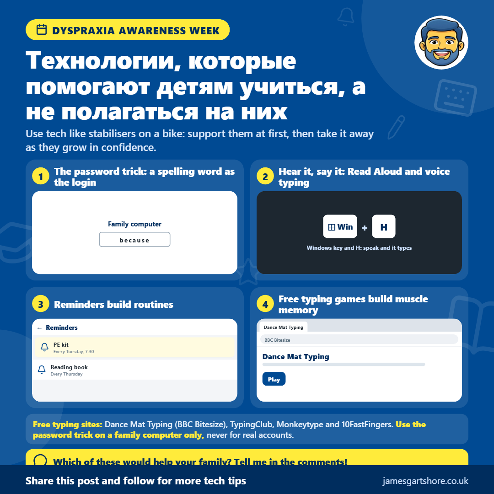

Неделя Диспраксии
Автор: Джеймс Готшоуэр · · Здоровье и благополучие
See the old version of this poster
 Download the old version
Download the old version
Привет всем! В эту неделю проходит Неделя осведомленности о диспраксии, поэтому я хотел поделиться некоторыми способами, как технологии могут помочь детям с диспраксией. Идея в том, чтобы использовать технологии для обучения, а не для того, на что они будут полагаться.
Диспраксия влияет на координацию и движение, и это может усложнять такие вещи, как письмо, орфография и поддержание порядка. Хорошая новость в том, что телефоны и компьютеры имеют много бесплатных инструментов, которые могут помочь, если их использовать правильно.
Простой трюк для правильного написания: сделайте слово таким, чтобы ваш ребенок с трудом запомнил пароль для входа на семейный компьютер, написав слово на записке рядом. Потому что он вводит его каждый день, и со временем начнет проверять записку все меньше и меньше, пока однажды он уже не будет ее использовать. Затем уберите записку и выберите новое слово. Делайте это только на семейном компьютере, никогда для электронной почты, банковских операций или любых настоящих учетных записей, так как одно слово легко угадать.
Слушать слова тоже может помочь. В Microsoft Edge и Word есть бесплатная функция «Прочитать вслух», которая читает текст, выделяя каждое слово, чтобы дети могли следить за текстом. Это работает и наоборот. С помощью голосового ввода они могут сказать слово, и оно появится на экране, что помогает связать звучание слова с его написанием. На компьютере с Windows нажмите клавишу Windows и H вместе, а на телефоне нажмите на микрофон на клавиатуре.
Набор текста часто проще, чем письмо от руки, для детей с дислаксией, а тесты на набор текста — отличный способ попрактиковаться. Поскольку они используют реальные слова, многократное набора текста развивает мышечную память, пока они не начнут писать их без усилий. BBC Bitesize Dance Mat Typing отлично подходит для начинающих, TypingClub предлагает бесплатные пошаговые уроки, а Monkeytype и 10FastFingers позволяют старшим детям проверить свою скорость и постараться превзойти свой лучший результат.
Организоваться тоже может быть непросто, и напоминания на телефоне и простые контрольные списки могут помочь детям наладить привычки, например, напоминание о спортивной форме во вторник. Со временем многие обнаруживают, что они запоминают без необходимости напоминаний.
Лучший способ представить это — как стабилизаторы на велосипеде. Используйте технологии, чтобы поддержать их сначала, а затем постепенно отпустите их по мере роста их уверенности.
Если вам нужна помощь с настройкой чего-либо из этого, просто напишите мне сообщение, и я сделаю все возможное, чтобы помочь.
Надеюсь, это поможет, и не стесняйтесь передавать это всем, кому это может быть полезно.